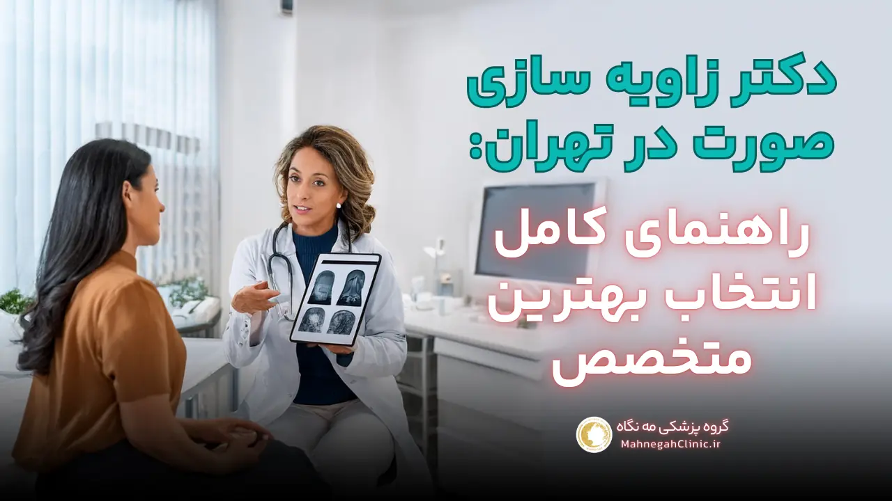
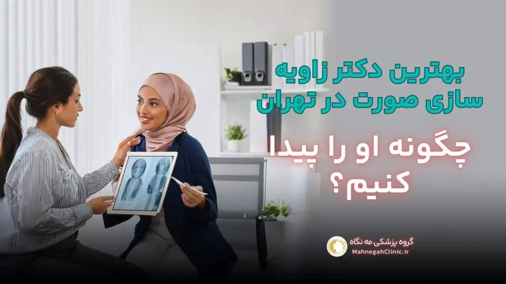
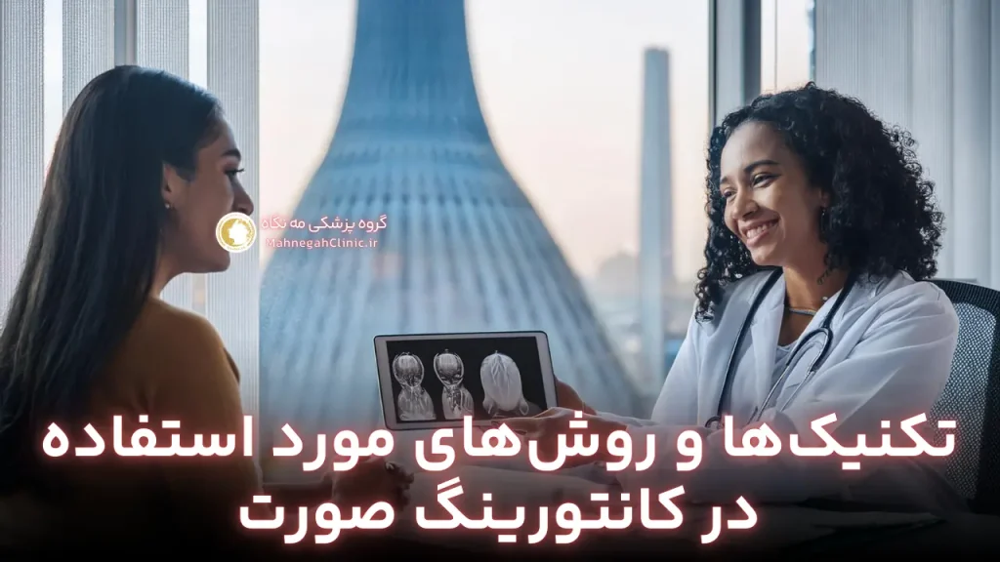
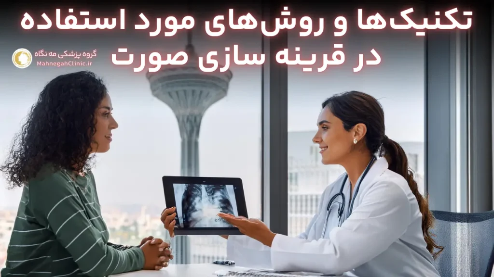
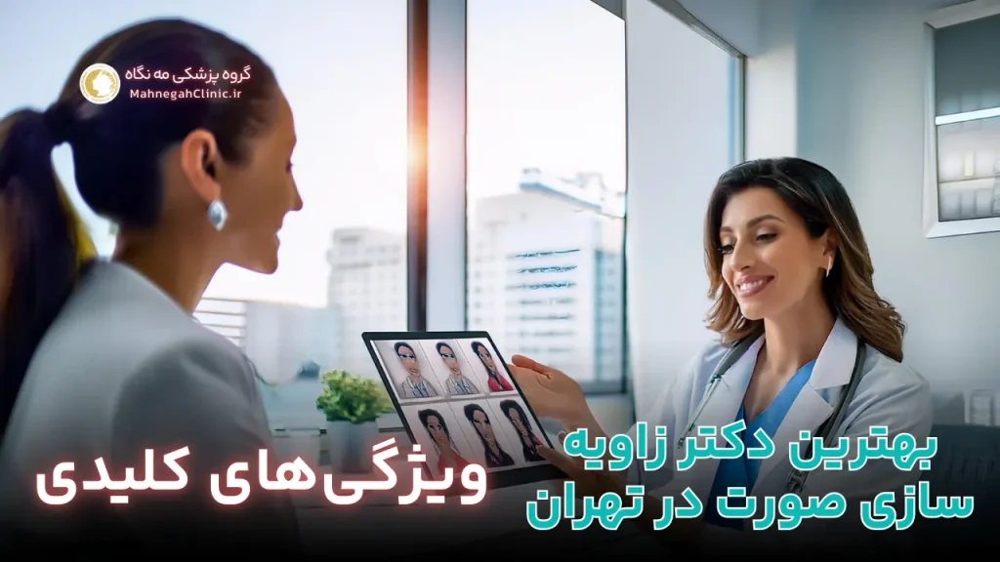

خانه / مجله / زاویه سازی فک
دکتر زاویه سازی صورت در تهران: راهنمای کامل انتخاب بهترین متخصص

دکتر زاویه سازی صورت کیست و چه خدماتی ارائه میدهد؟
در دنیای امروز که زیبایی و جذابیت ظاهری اهمیت ویژهای پیدا کرده است، دکتر زاویه سازی صورت به عنوان یک متخصص زیبایی، نقش مهمی در بهبود و تغییر چهره افراد ایفا میکند.
این متخصصان با استفاده از تکنیکها و روشهای مختلف، به زیباجویان کمک میکنند تا به ظاهری متناسبتر و جذابتر دست یابند.
تخصص و مهارتهای مورد نیاز یک دکتر زاویه سازی صورت
یک دکتر زاویه سازی صورت باید دارای تخصص و مهارتهای لازم در زمینه زیبایی و جراحی پلاستیک باشد. این تخصصها شامل موارد زیر میشوند:
- تسلط بر آناتومی صورت: شناخت دقیق ساختار استخوانها، عضلات و بافتهای صورت برای انجام زاویه سازی به صورت ایمن و موثر ضروری است.
- مهارت در تزریق فیلر و بوتاکس: این دو روش از پرکاربردترین تکنیکها در زاویه سازی صورت هستند و دکتر باید در تزریق آنها مهارت کافی داشته باشد.
- آشنایی با روشهای جراحی: در برخی موارد، زاویه سازی صورت نیاز به جراحی دارد و دکتر باید با این روشها و تکنیکهای مرتبط آشنا باشد.
- توانایی مشاوره و ارتباط موثر: یک دکتر خوب باید بتواند با بیمار ارتباط برقرار کرده و او را در مورد روشهای مناسب و انتظارات واقعبینانه راهنمایی کند.
روشهای مختلف زاویه سازی صورت توسط دکتر متخصص
دکتر زاویه سازی صورت از روشهای متنوعی برای بهبود ظاهر چهره استفاده میکند. برخی از این روشها عبارتند از:
- تزریق فیلر: فیلرها موادی هستند که برای پر کردن و حجم دادن به نواحی مختلف صورت مانند گونهها، لبها و چانه استفاده میشوند.
- تزریق بوتاکس: بوتاکس با فلج کردن عضلات، خطوط و چین و چروکهای صورت را کاهش میدهد و به چهره ظاهری جوانتر میبخشد.
- لیفت با نخ: در این روش، نخهای مخصوصی زیر پوست قرار میگیرند و با کشیدن پوست، باعث لیفت و سفت شدن آن میشوند.
- جراحی زاویه سازی فک: این روش جراحی برای تغییر شکل فک و ایجاد ظاهری زاویهدارتر استفاده میشود.
- پروتز چانه: در این روش، پروتزهای مخصوصی برای برجسته کردن چانه و بهبود تناسب صورت استفاده میشوند.
دکتر زاویه سازی صورت با توجه به نیازها و اهداف هر بیمار، روش مناسب را انتخاب کرده و به او کمک میکند تا به ظاهری ایدهآل و جذاب دست یابد.
نکته: انتخاب یک دکتر زاویه سازی صورت ماهر و باتجربه، اهمیت بسیاری در دستیابی به نتایج مطلوب و جلوگیری از عوارض جانبی دارد.
بهترین دکتر زاویه سازی صورت در تهران: چگونه او را پیدا کنیم؟
یافتن بهترین دکتر زاویه سازی صورت در تهران میتواند چالشبرانگیز باشد، اما با کمی تحقیق و بررسی میتوانید بهترین گزینه را برای خود بیابید. در این بخش به شما کمک میکنیم تا با استفاده از معیارهای مهم و منابع قابل اعتماد، دکتر مناسب را انتخاب کنید و به رویای داشتن چهرهای زیبا و متناسب دست یابید.
معیارهای انتخاب بهترین دکتر زاویه سازی صورت
هنگام جستجوی بهترین دکتر زاویه سازی صورت در تهران، به موارد زیر توجه کنید:
- تخصص و تجربه: اطمینان حاصل کنید که دکتر مورد نظر شما دارای تخصص و تجربه کافی در زمینه زاویه سازی صورت است. بررسی مدارک تحصیلی، گواهینامهها و سوابق کاری دکتر میتواند به شما در این زمینه کمک کند.
- مهارت و تکنیک: یک دکتر خوب باید با جدیدترین تکنیکها و روشهای زاویه سازی صورت آشنا باشد و بتواند آنها را به صورت ایمن و موثر اجرا کند.
- نظرات بیماران: بررسی نظرات و تجربیات بیماران قبلی میتواند به شما درک بهتری از مهارت و کیفیت کار دکتر بدهد. میتوانید این نظرات را در وبسایت دکتر، شبکههای اجتماعی یا سایتهای معتبر پزشکی بیابید.
- مشاوره و ارتباط: یک دکتر خوب باید بتواند با شما ارتباط برقرار کرده و به سوالات شما پاسخ دهد. همچنین، او باید قبل از انجام هرگونه عمل، مشاوره کاملی با شما داشته باشد و شما را در مورد روشهای مناسب، انتظارات واقعبینانه و مراقبتهای پس از عمل راهنمایی کند.
- محیط کلینیک: محیط کلینیک باید تمیز، بهداشتی و مجهز به تجهیزات مدرن باشد. این امر نشاندهنده حرفهای بودن دکتر و اهمیت او به سلامت و ایمنی بیماران است.
استفاده از منابع آنلاین و نظرات بیماران برای یافتن دکتر مناسب
در عصر دیجیتال، اینترنت میتواند یک منبع ارزشمند برای یافتن بهترین دکتر زاویه سازی صورت در تهران باشد. میتوانید از وبسایتها و پلتفرمهای معتبر پزشکی استفاده کنید تا لیستی از دکتران متخصص در این زمینه را بیابید. همچنین، میتوانید در شبکههای اجتماعی مانند اینستاگرام، پیج بهترین دکتر زاویه سازی صورت در تهران را جستجو کنید و نمونه کارها و نظرات بیماران را بررسی کنید.
نکته: در انتخاب دکتر، عجله نکنید و وقت کافی برای تحقیق و بررسی صرف کنید. همچنین، به یاد داشته باشید که قیمت نباید تنها معیار انتخاب شما باشد. مهمترین نکته، انتخاب یک دکتر متخصص و باتجربه است که بتواند به شما در دستیابی به نتایج مطلوب و ایمن کمک کند.

پیج بهترین دکتر زاویه سازی صورت در تهران: دریچهای به دنیای زیبایی
در دنیای امروز که شبکههای اجتماعی به بخش جداییناپذیری از زندگی ما تبدیل شدهاند، پیج بهترین دکتر زاویه سازی صورت در تهران میتواند نقش مهمی در انتخاب دکتر مناسب و آگاهی از جدیدترین تکنیکها و روشهای زیبایی داشته باشد. اینستاگرام به عنوان یکی از محبوبترین پلتفرمهای اجتماعی، بستری ایدهآل برای دکتران زیبایی فراهم کرده است تا نمونه کارها، نظرات بیماران و اطلاعات مفید دیگری را با مخاطبان خود به اشتراک بگذارند.
اهمیت شبکههای اجتماعی در انتخاب دکتر زاویه سازی صورت
شبکههای اجتماعی فرصتی بینظیر برای زیباجویان فراهم میکنند تا:
- با دکتران مختلف آشنا شوند: در اینستاگرام میتوانید پیج دکتران مختلف را دنبال کنید و با تخصص، تجربه و سبک کاری آنها آشنا شوید.
- نمونه کارها را مشاهده کنند: عکسها و ویدیوهای قبل و بعد از عمل به شما کمک میکنند تا نتایج واقعی کار دکتر را ببینید و تصمیم بهتری بگیرید.
- نظرات بیماران را بخوانید: نظرات و تجربیات بیماران قبلی میتواند به شما درک بهتری از مهارت، اخلاق حرفهای و کیفیت خدمات دکتر بدهد.
- با دکتر ارتباط برقرار کنند: میتوانید از طریق دایرکت یا کامنتها، سوالات خود را از دکتر بپرسید و اطلاعات بیشتری کسب کنید.
- از جدیدترین تکنیکها و روشها آگاه شوند: دکتران اغلب در پیج خود، اطلاعات مفیدی در مورد جدیدترین تکنیکها و روشهای زیبایی به اشتراک میگذارند.
بررسی نمونه کارها و نظرات بیماران در پیج اینستاگرام دکتر
هنگام بررسی پیج بهترین دکتر زاویه سازی صورت در تهران، به موارد زیر توجه کنید:
- کیفیت عکسها و ویدیوها: عکسها و ویدیوهای با کیفیت بالا نشاندهنده حرفهای بودن دکتر و اهمیت او به ارائه خدمات با کیفیت است.
- تنوع نمونه کارها: بررسی نمونه کارهای متنوع به شما کمک میکند تا ببینید آیا دکتر در زمینه مورد نظر شما تخصص و تجربه کافی دارد یا خیر.
- نظرات واقعی بیماران: به دنبال نظرات واقعی و صادقانه بیماران باشید و به نظراتی که بیش از حد مثبت یا منفی هستند، شک کنید.
- پاسخگویی دکتر: ببینید آیا دکتر به سوالات و کامنتهای بیماران پاسخ میدهد یا خیر. این نشاندهنده اهمیت او به ارتباط با مخاطبان است.
- اطلاعات مفید و آموزشی: یک پیج خوب علاوه بر نمونه کارها، باید حاوی اطلاعات مفید و آموزشی در مورد زاویه سازی صورت و مراقبتهای پس از آن باشد.
نکته: در انتخاب دکتر، به شبکههای اجتماعی به عنوان یک ابزار کمکی نگاه کنید و تنها به اطلاعات موجود در پیج اینستاگرام اکتفا نکنید. همچنین، حتماً مشاوره حضوری با دکتر داشته باشید و سوالات خود را بپرسید تا بهترین تصمیم را برای خود بگیرید.
دکتر خوب برای زاویه سازی صورت: ویژگیهای کلیدی او چیست؟
انتخاب دکتر خوب برای زاویه سازی صورت، تصمیمی حیاتی است که میتواند تأثیر بسزایی در نتیجه نهایی و رضایت شما از عمل داشته باشد. در این بخش، به بررسی ویژگیهای کلیدی یک دکتر خوب در این زمینه میپردازیم تا بتوانید با اطمینان بیشتری بهترین گزینه را برای خود انتخاب کنید.
تجربه و تخصص دکتر در زمینه زاویه سازی صورت
یکی از مهمترین ویژگیهای یک دکتر خوب برای زاویه سازی صورت، تجربه و تخصص او در این زمینه است. یک دکتر با تجربه، با انواع چهرهها و آناتومیهای مختلف آشناست و میتواند بهترین روش را برای هر فرد انتخاب کند. همچنین، او با عوارض احتمالی و نحوه مدیریت آنها آشناست و میتواند در صورت بروز هرگونه مشکل، به سرعت و به طور موثر اقدام کند.
برای بررسی تجربه و تخصص دکتر، میتوانید به موارد زیر توجه کنید:
- مدارک تحصیلی و گواهینامهها: اطمینان حاصل کنید که دکتر مورد نظر شما دارای مدارک تحصیلی معتبر در زمینه پزشکی و جراحی پلاستیک است و گواهینامههای لازم برای انجام زاویه سازی صورت را دارد.
- سوابق کاری: بررسی سوابق کاری دکتر و تعداد عملهای زاویه سازی صورت که انجام داده است، میتواند به شما درک بهتری از تجربه او بدهد.
- عضویت در انجمنها و جوامع علمی: عضویت دکتر در انجمنها و جوامع علمی مرتبط با زیبایی و جراحی پلاستیک، نشاندهنده بهروز بودن دانش و مهارتهای اوست.
- مقالات و تحقیقات: بررسی مقالات و تحقیقات منتشر شده توسط دکتر در زمینه زاویه سازی صورت، میتواند نشاندهنده علاقه و تخصص او در این زمینه باشد.
ارتباط موثر و مشاوره دقیق قبل از انجام زاویه سازی
یک دکتر خوب برای زاویه سازی صورت باید بتواند با شما ارتباط موثر برقرار کند و به تمام سوالات و نگرانیهای شما پاسخ دهد. او باید قبل از انجام هرگونه عمل، مشاوره کاملی با شما داشته باشد و شما را در مورد موارد زیر راهنمایی کند:
- روشهای مختلف زاویه سازی صورت: دکتر باید روشهای مختلف زاویه سازی صورت را برای شما توضیح دهد و مزایا و معایب هر کدام را بیان کند.
- انتظارات واقعبینانه: دکتر باید به شما کمک کند تا انتظارات واقعبینانهای از نتیجه عمل داشته باشید و شما را از محدودیتها و عوارض احتمالی آگاه کند.
- مراقبتهای قبل و بعد از عمل: دکتر باید دستورالعملهای لازم در مورد مراقبتهای قبل و بعد از عمل را به شما ارائه دهد تا بتوانید به بهترین نحو بهبود یابید و از نتیجه عمل خود لذت ببرید.
نکته: ارتباط موثر و مشاوره دقیق با دکتر، به شما کمک میکند تا با اطمینان بیشتری تصمیم بگیرید و از نتیجه عمل خود رضایت داشته باشید.

بهترین دکتر کانتورینگ صورت در تهران: هنر و علم در کنار هم
کانتورینگ صورت یکی از تکنیکهای محبوب و پرطرفدار در دنیای زیبایی است که به شما کمک میکند تا با استفاده از سایهها و روشناییها، به چهرهای متناسبتر و جذابتر دست یابید. اما برای دستیابی به بهترین نتیجه، انتخاب بهترین دکتر کانتورینگ صورت در تهران امری ضروری است. در این بخش، به تفاوت کانتورینگ صورت با زاویه سازی و تکنیکهای مورد استفاده در این روش میپردازیم.
تفاوت کانتورینگ صورت با زاویه سازی صورت
اگرچه کانتورینگ صورت و زاویه سازی صورت هر دو به بهبود ظاهر چهره کمک میکنند، اما تفاوتهای مهمی بین آنها وجود دارد:
- کانتورینگ صورت: یک تکنیک آرایشی است که با استفاده از سایهها و روشناییها، به ایجاد خطوط و برجستگیهای دلخواه در صورت کمک میکند. این روش موقتی است و با شستشوی صورت از بین میرود.
- زاویه سازی صورت: یک روش پزشکی است که با استفاده از تکنیکهای مختلف مانند تزریق فیلر، بوتاکس یا جراحی، به تغییر شکل و ساختار صورت کمک میکند. این روش دائمی یا نیمهدائمی است و نیاز به تخصص و تجربه یک دکتر متخصص دارد.
بنابراین، اگر به دنبال یک تغییر موقتی و سریع در ظاهر چهره خود هستید، کانتورینگ صورت میتواند گزینه مناسبی باشد. اما اگر به دنبال یک تغییر دائمی و اساسی هستید، زاویه سازی صورت توسط یک دکتر متخصص را در نظر بگیرید.
تکنیکها و روشهای مورد استفاده در کانتورینگ صورت
بهترین دکتر کانتورینگ صورت در تهران با استفاده از تکنیکها و روشهای مختلف، به شما کمک میکند تا به چهرهای متناسبتر و جذابتر دست یابید. برخی از این تکنیکها عبارتند از:
- استفاده از کرم پودر و کانسیلر: با استفاده از کرم پودر تیرهتر و روشنتر از رنگ پوست، میتوانید سایهها و روشناییهای لازم را ایجاد کنید و به برجسته کردن یا کوچکتر نشان دادن نواحی مختلف صورت کمک کنید.
- استفاده از پودر کانتور و هایلایتر: پودر کانتور و هایلایتر به شما کمک میکنند تا خطوط و برجستگیهای صورت را بیشتر تعریف کنید و به چهرهای سهبعدیتر دست یابید.
- تکنیک بیکینگ: این تکنیک به تثبیت آرایش و جلوگیری از پخش شدن آن کمک میکند و باعث میشود کانتورینگ شما برای مدت طولانیتری دوام بیاورد.
- استفاده از براشهای مناسب: استفاده از براشهای مناسب برای اعمال کرم پودر، کانسیلر، پودر کانتور و هایلایتر، اهمیت بسیاری در دستیابی به یک کانتورینگ حرفهای و بینقص دارد.
نکته: برای یادگیری تکنیکهای کانتورینگ صورت، میتوانید از ویدیوهای آموزشی آنلاین، کلاسهای حضوری یا مشاوره با یک آرایشگر حرفهای استفاده کنید. همچنین، تمرین و تکرار مداوم به شما کمک میکند تا در این زمینه مهارت بیشتری کسب کنید و به نتایج بهتری دست یابید.
بهترین دکتر مادلینگ صورت در تهران: خلق چهرهای بینقص
مادلینگ صورت یا Facial Sculpting یکی از تکنیکهای پیشرفته و تخصصی در حوزه زیبایی است که به تغییر شکل و بهبود ساختار صورت میپردازد. این روش با استفاده از ترکیبی از تکنیکهای مختلف، به شما کمک میکند تا به چهرهای متناسبتر، جذابتر و بینقص دست یابید. بهترین دکتر مادلینگ صورت در تهران با تسلط بر این تکنیکها و هنر خود، میتواند زیبایی طبیعی شما را برجسته کرده و اعتماد به نفس شما را افزایش دهد.
مادلینگ صورت چیست و چه اهدافی را دنبال میکند؟
مادلینگ صورت به مجموعهای از روشها و تکنیکها گفته میشود که با هدف تغییر شکل و بهبود ساختار صورت انجام میشوند. برخی از اهداف اصلی مادلینگ صورت عبارتند از:
- زاویه سازی صورت: ایجاد خطوط فک مشخصتر و برجستهتر، گونههای برجسته و چانهای خوشفرم
- قرینه سازی صورت: بهبود تقارن و تعادل در اجزای صورت
- جوانسازی صورت: کاهش چین و چروکها، خطوط ریز و افتادگی پوست
- بهبود تناسب اجزای صورت: ایجاد هماهنگی و تناسب بین اجزای مختلف صورت مانند بینی، لبها، چشمها و گونهها
- افزایش اعتماد به نفس: دستیابی به چهرهای زیبا و متناسب میتواند اعتماد به نفس شما را افزایش داده و کیفیت زندگی شما را بهبود بخشد.
روشهای مختلف مادلینگ صورت توسط دکتر متخصص
بهترین دکتر مادلینگ صورت در تهران با توجه به نیازها و اهداف هر بیمار، از روشهای مختلفی برای مادلینگ صورت استفاده میکند. برخی از این روشها عبارتند از:
- تزریق فیلر: فیلرها موادی هستند که برای پر کردن و حجم دادن به نواحی مختلف صورت مانند گونهها، لبها، چانه و زیر چشمها استفاده میشوند.
- تزریق بوتاکس: بوتاکس با فلج کردن عضلات، خطوط و چین و چروکهای صورت را کاهش میدهد و به چهره ظاهری جوانتر میبخشد.
- لیفت با نخ: در این روش، نخهای مخصوصی زیر پوست قرار میگیرند و با کشیدن پوست، باعث لیفت و سفت شدن آن میشوند.
- جراحی زاویه سازی فک: این روش جراحی برای تغییر شکل فک و ایجاد ظاهری زاویهدارتر استفاده میشود.
- پروتز چانه: در این روش، پروتزهای مخصوصی برای برجسته کردن چانه و بهبود تناسب صورت استفاده میشوند.
- رینوپلاستی: جراحی بینی میتواند به بهبود تناسب صورت و ایجاد هماهنگی بیشتر بین اجزای آن کمک کند.
- بلفاروپلاستی: جراحی پلک میتواند به رفع افتادگی پلکها و پف زیر چشمها کمک کند و چهرهای جوانتر و شادابتر ایجاد کند.
نکته: انتخاب بهترین دکتر مادلینگ صورت در تهران نیازمند تحقیق و بررسی دقیق است. اطمینان حاصل کنید که دکتر مورد نظر شما دارای تخصص و تجربه کافی در این زمینه است و میتواند به شما در دستیابی به نتایج مطلوب و ایمن کمک کند.

دکتر قرینه سازی صورت: رسیدن به تعادل و زیبایی
قرینه سازی صورت یکی از اصول بنیادی زیبایی است که به ایجاد تعادل و هماهنگی در چهره کمک میکند. در دنیای امروز، دکتر قرینه سازی صورت با استفاده از تکنیکها و روشهای مختلف، به زیباجویان کمک میکند تا به چهرهای متقارنتر و جذابتر دست یابند و اعتماد به نفس خود را افزایش دهند.
اهمیت قرینه سازی در زیبایی صورت
تحقیقات نشان داده است که چهرههای متقارن، جذابتر و زیباتر به نظر میرسند. این به دلیل این است که مغز ما به طور طبیعی به دنبال الگوها و نظم است و چهرههای متقارن، این نیاز را برآورده میکنند. قرینه سازی صورت میتواند به بهبود موارد زیر کمک کند:
- تناسب اجزای صورت: ایجاد تعادل و هماهنگی بین اجزای مختلف صورت مانند چشمها، ابروها، بینی، لبها و گونهها
- جذابیت چهره: افزایش جذابیت کلی چهره و ایجاد چهرهای دلنشینتر
- اعتماد به نفس: دستیابی به چهرهای متقارن و زیبا میتواند اعتماد به نفس شما را افزایش داده و تأثیر مثبتی بر روابط اجتماعی و حرفهای شما داشته باشد.
تکنیکها و روشهای مورد استفاده در قرینه سازی صورت
دکتر قرینه سازی صورت با توجه به نیازها و اهداف هر بیمار، از روشهای مختلفی برای قرینه سازی صورت استفاده میکند. برخی از این روشها عبارتند از:
- تزریق فیلر: فیلرها میتوانند برای پر کردن و حجم دادن به نواحی مختلف صورت استفاده شوند تا عدم تقارنها را اصلاح کنند و به چهرهای متقارنتر دست یابند.
- تزریق بوتاکس: بوتاکس میتواند برای اصلاح عدم تقارن در عضلات صورت و ایجاد تعادل در حرکت آنها استفاده شود.
- لیفت با نخ: لیفت با نخ میتواند به بهبود تقارن در نواحی مختلف صورت مانند ابروها و گونهها کمک کند.
- جراحی: در برخی موارد، جراحی ممکن است برای اصلاح عدم تقارنهای شدید در استخوانها یا بافتهای صورت لازم باشد.
- ترکیب روشها: در بسیاری از موارد، دکتر قرینه سازی صورت از ترکیبی از روشهای فوق برای دستیابی به بهترین نتیجه استفاده میکند.
نکته: انتخاب دکتر قرینه سازی صورت ماهر و باتجربه، اهمیت بسیاری در دستیابی به نتایج مطلوب و جلوگیری از عوارض جانبی دارد. قبل از انتخاب دکتر، حتماً نمونه کارها و نظرات بیماران را بررسی کنید و مشاوره حضوری با او داشته باشید.
بهترین فیلر برای زاویه سازی صورت: انتخابی هوشمندانه
انتخاب بهترین فیلر برای زاویه سازی صورت یکی از مهمترین تصمیماتی است که در مسیر دستیابی به چهرهای متناسب و جذاب باید بگیرید. فیلرها با پر کردن و حجم دادن به نواحی مختلف صورت، به ایجاد خطوط فک مشخصتر، گونههای برجسته و چانهای خوشفرم کمک میکنند. اما با توجه به تنوع فیلرهای موجود در بازار، انتخاب بهترین گزینه ممکن است کمی گیجکننده باشد. در این بخش، به بررسی انواع فیلرهای مورد استفاده در زاویه سازی صورت و مزایا و معایب هر کدام میپردازیم تا بتوانید با آگاهی بیشتری بهترین فیلر را برای خود انتخاب کنید.
انواع فیلرهای مورد استفاده در زاویه سازی صورت
فیلرها بر اساس ماده اصلی تشکیلدهنده آنها به چند دسته تقسیم میشوند:
- فیلرهای هیالورونیک اسید: این فیلرها از مادهای طبیعی به نام هیالورونیک اسید ساخته شدهاند که به طور طبیعی در بدن وجود دارد. این فیلرها به دلیل سازگاری بالا با بدن، کمترین عوارض جانبی را دارند و نتایج آنها طبیعی و زیبا است. برخی از برندهای محبوب فیلر هیالورونیک اسید عبارتند از: Juvederm، Restylane، Teosyal و Belotero
- فیلرهای کلسیم هیدروکسی آپاتیت: این فیلرها از مادهای معدنی به نام کلسیم هیدروکسی آپاتیت ساخته شدهاند که به طور طبیعی در استخوانها و دندانها وجود دارد. این فیلرها ماندگاری بیشتری نسبت به فیلرهای هیالورونیک اسید دارند و علاوه بر حجم دادن، به تحریک تولید کلاژن در پوست نیز کمک میکنند. Radiesse یکی از برندهای محبوب فیلر کلسیم هیدروکسی آپاتیت است.
- فیلرهای پلی ال لاکتیک اسید: این فیلرها از مادهای مصنوعی به نام پلی ال لاکتیک اسید ساخته شدهاند که به تدریج در بدن تجزیه میشود و باعث تحریک تولید کلاژن میشود. این فیلرها ماندگاری طولانیتری نسبت به فیلرهای هیالورونیک اسید دارند و به بهبود کیفیت پوست و کاهش چین و چروکها نیز کمک میکنند. Sculptra یکی از برندهای محبوب فیلر پلی ال لاکتیک اسید است.
مزایا و معایب هر نوع فیلر و انتخاب بهترین گزینه
هر نوع فیلر دارای مزایا و معایب خاص خود است و انتخاب بهترین گزینه به نیازها و اهداف شما بستگی دارد. در جدول زیر، مزایا و معایب هر نوع فیلر را به طور خلاصه مقایسه میکنیم:
| نوع فیلر | مزایا | معایب |
|---|---|---|
| هیالورونیک اسید | * نتایج طبیعی و زیبا * کمترین عوارض جانبی * قابلیت اصلاح و برگشتپذیری | * ماندگاری کوتاهتر (6 تا 12 ماه) * نیاز به تزریق مجدد برای حفظ نتایج |
| کلسیم هیدروکسی آپاتیت | * ماندگاری طولانیتر (12 تا 18 ماه) * تحریک تولید کلاژن * بهبود کیفیت پوست | * هزینه بالاتر * عدم قابلیت برگشتپذیری کامل |
| پلی ال لاکتیک اسید | * ماندگاری بسیار طولانی (تا 2 سال) * تحریک تولید کلاژن * بهبود کیفیت پوست و کاهش چین و چروکها | * نیاز به چند جلسه تزریق * عدم قابلیت برگشتپذیری کامل * هزینه بالاتر |
بهترین فیلر برای زاویه سازی صورت شما به عوامل مختلفی بستگی دارد، از جمله:
- ناحیه مورد نظر برای تزریق: برخی فیلرها برای نواحی خاصی از صورت مناسبتر هستند. به عنوان مثال، فیلرهای هیالورونیک اسید برای لبها و فیلرهای کلسیم هیدروکسی آپاتیت برای گونهها و چانه مناسبتر هستند.
- میزان حجم دهی مورد نیاز: اگر به دنبال حجم دهی زیادی هستید، فیلرهای کلسیم هیدروکسی آپاتیت یا پلی ال لاکتیک اسید ممکن است گزینههای بهتری باشند.
- ماندگاری مورد نظر: اگر به دنبال نتایج طولانیمدت هستید، فیلرهای کلسیم هیدروکسی آپاتیت یا پلی ال لاکتیک اسید را در نظر بگیرید.
- بودجه شما: فیلرهای هیالورونیک اسید معمولاً ارزانتر از فیلرهای دیگر هستند.
نکته: قبل از انتخاب فیلر، حتماً با دکتر زاویه سازی صورت خود مشورت کنید. او میتواند با توجه به نیازها و اهداف شما، بهترین فیلر را برای شما پیشنهاد دهد.

سوالات متداول درباره زاویه سازی صورت
اکثر روشهای زاویه سازی صورت با استفاده از بیحسی موضعی انجام میشوند و درد کمی دارند، اما ممکن است در برخی موارد کمی احساس ناراحتی کنید.
ماندگاری نتایج به روش مورد استفاده و نوع فیلر بستگی دارد، اما معمولاً بین 6 ماه تا 2 سال است.
برخی عوارض جانبی ممکن است شامل تورم، کبودی، قرمزی و حساسیت در محل تزریق باشد، اما این عوارض معمولاً موقتی هستند و به سرعت برطرف میشوند.
هزینه زاویه سازی صورت به عوامل مختلفی مانند روش مورد استفاده، نوع فیلر، میزان تزریق و تخصص دکتر بستگی دارد و میتواند متفاوت باشد.
در اکثر موارد، میتوانید بلافاصله پس از زاویه سازی صورت به فعالیتهای روزمره خود بازگردید، اما ممکن است نیاز به استراحت و محدود کردن برخی فعالیتها برای چند روز داشته باشید.